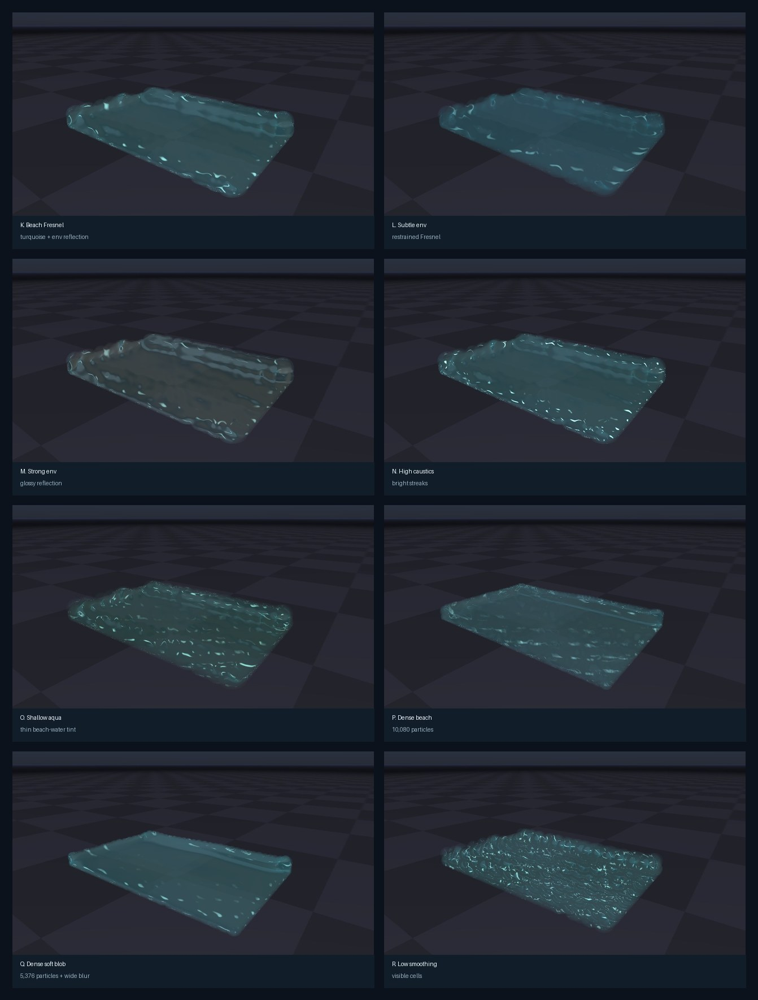

Newton Fluid Support
Prototype implementation of particle-fluid simulation and ViewerGL water rendering for Newton, focused on giving solver developers a reusable fluid visualization path.
Generated 2026-06-06 from branch eric-heiden/fluid-support, based on origin/main a046d613. Media was rendered with ViewerGL.get_frame().
Candidate K: brighter turquoise beach-water material with caustics and Fresnel-weighted environment-map reflection.
viewer.log_fluid() with particle centers and radii, then get screen-space depth smoothing, translucent composition, approximate refraction, screen-color reflection, Fresnel-weighted environment reflection, and caustics without reimplementing GL water shaders.
Architecture
newton.solvers.SolverSPHis an experimental weakly-compressible SPH solver using Warp kernels and awp.HashGridneighbor search.ViewerBase.log_fluid()adds a backend-neutral fluid logging API. Backends without fluid support fall back to point rendering.ViewerGL.log_fluid()stores particle centers/radii in a GL buffer and renders them through a screen-space fluid pass.- The ViewerGL pass writes nearest fluid depth and optical thickness, applies separable bilateral depth smoothing, then composites water over the opaque scene using translucent color, refraction offsets, screen-color reflection, Fresnel-weighted environment-map reflection, procedural caustic strokes, and a specular highlight.
- Additional material controls now include blur radius, refraction/reflection strength, environment-map reflection strength, and caustic strength/scale, so fluid solver authors can iterate visually without rewriting shaders.
- Particle billboards are expanded in a geometry shader instead of relying on
gl_PointCoord, which was unreliable in the target headless GL context.
Visual Variants
The gallery below explores ten rendered directions. Each card is a separate ViewerGL.get_frame() MP4 render with the exact settings shown under the video, so the visual tradeoffs can be compared directly.

Contact sheet of the generated variants. D and I use higher particle counts; the others use the same 1,008-particle SPH setup with different ViewerGL material controls.
Closest to the first implementation. Useful baseline, but individual particle silhouettes remain visible.
particles=1,008; radius_scale=1.35; blur=4 x 1.0; opacity=0.75; thickness=1.8; caustic=0.00; refract=0.022; reflect=0.07
Open MP4 render
More continuous surface extraction from the same particles. The blob reads smoother but loses some small-scale detail.
particles=1,008; radius_scale=1.95; blur=9 x 2.6; opacity=0.78; thickness=2.0; caustic=0.18 @ 80; refract=0.022; reflect=0.07
Open MP4 render
Adds caustic-like procedural strokes, stronger refraction, and a glassier surface. Current best candidate for a nice water default.
particles=1,008; radius_scale=1.85; blur=8 x 2.3; opacity=0.74; thickness=2.0; caustic=0.62 @ 105; refract=0.034; reflect=0.11
Open MP4 render
Tests the solver/render path with more particles and smaller radii. The surface has fewer visible particle cells before smoothing.
particles=5,376; radius_scale=1.35; blur=8 x 1.8; opacity=0.78; thickness=2.1; caustic=0.35 @ 85; refract=0.022; reflect=0.07
Open MP4 render
More opaque and volumetric. This may suit viscous fluid presets better than clear water.
particles=1,008; radius_scale=1.65; blur=8 x 2.1; opacity=0.90; thickness=3.3; caustic=0.22 @ 75; refract=0.020; reflect=0.07
Open MP4 render
Highest caustic/refraction settings. It is visually lively but may be too sparkly for a default water material.
particles=1,008; radius_scale=1.70; blur=7 x 2.0; opacity=0.64; thickness=1.35; caustic=0.95 @ 145; refract=0.046; reflect=0.14
Open MP4 render
Baseline render mode for comparison. The individual SPH samples are fully visible and do not read as a continuous liquid surface.
particles=1,008; render_mode=particles; fluid pass disabled; same SPH state and camera as A-C
Open MP4 render
Isolates the screen-space surface extraction idea: large overlapping billboards plus aggressive bilateral depth smoothing.
particles=1,008; radius_scale=2.25; blur=11 x 3.0; opacity=0.80; thickness=2.2; caustic=0.00; refract=0.018; reflect=0.055
Open MP4 render
Pushes particle count and smaller radii. This reduces the particle-cell look before the render pass has to smooth the surface.
particles=10,080; radius_scale=1.45; blur=9 x 2.0; opacity=0.72; thickness=2.4; caustic=0.28 @ 92; refract=0.030; reflect=0.095
Open MP4 render
A deliberately exaggerated clear-water material. It shows the upper range of caustic and refraction controls.
particles=1,008; radius_scale=1.85; blur=8 x 2.4; opacity=0.60; thickness=1.25; caustic=1.10 @ 170; refract=0.055; reflect=0.16
Open MP4 render
Variant Settings Matrix
| Variant | Approach | Particles | Surface settings | Material settings |
|---|---|---|---|---|
| A | Control fluid render | 1,008 | radius_scale=1.35, blur=4 x 1.0 |
opacity=0.75, thickness=1.8, caustic=0.00 |
| B | Soft blob extraction | 1,008 | radius_scale=1.95, blur=9 x 2.6 |
opacity=0.78, thickness=2.0, caustic=0.18 @ 80 |
| C | Caustic glass candidate | 1,008 | radius_scale=1.85, blur=8 x 2.3 |
opacity=0.74, caustic=0.62 @ 105, refract=0.034, reflect=0.11 |
| D | Higher particle count | 5,376 | radius_scale=1.35, blur=8 x 1.8 |
opacity=0.78, thickness=2.1, caustic=0.35 @ 85 |
| E | Milky volumetric water | 1,008 | radius_scale=1.65, blur=8 x 2.1 |
opacity=0.90, thickness=3.3, caustic=0.22 @ 75 |
| F | Thin clear caustics | 1,008 | radius_scale=1.70, blur=7 x 2.0 |
opacity=0.64, thickness=1.35, caustic=0.95 @ 145 |
| G | Raw particle baseline | 1,008 | render_mode=particles |
Fluid surface pass disabled. |
| H | Blob extraction only | 1,008 | radius_scale=2.25, blur=11 x 3.0 |
opacity=0.80, thickness=2.2, caustic=0.00 |
| I | Dense clear water | 10,080 | radius_scale=1.45, blur=9 x 2.0 |
opacity=0.72, thickness=2.4, caustic=0.28 @ 92 |
| J | Clear caustic pool | 1,008 | radius_scale=1.85, blur=8 x 2.4 |
opacity=0.60, caustic=1.10 @ 170, refract=0.055, reflect=0.16 |
Beach Water Env-Map Sweep
Variants K-R use the updated shader path. The fluid composite samples the same ViewerGL environment map used by metallic surfaces, then weights it with a water-style Fresnel term. These videos are longer than A-J and include warmup frames so the dam-break surface has moved before recording starts.

Contact sheet for the new environment-map/Fresnel sweep. K is the current recommendation; M, N, O, and R intentionally push one parameter family harder to expose tradeoffs.
Current recommended beach-water look: brighter turquoise base color, visible caustics, and moderate Fresnel env reflection.
particles=1,008; radius_scale=1.85; blur=9 x 2.35; opacity=0.66; thickness=1.60; env=0.28; caustic=0.72 @ 120; refract=0.045
Open MP4 render
Lower opacity and environment strength. Useful if the default reads too glossy or too stylized.
particles=1,008; radius_scale=1.75; blur=8 x 2.15; opacity=0.58; thickness=1.25; env=0.12; caustic=0.42 @ 105; refract=0.035
Open MP4 render
Pushes environment reflection to show the upper end of the control. Good for reading sky reflections, but it may be too dark/glassy for a default.
particles=1,008; radius_scale=1.80; blur=8 x 2.25; opacity=0.62; thickness=1.45; env=0.55; caustic=0.58 @ 120; reflect=0.14
Open MP4 render
Raises caustic strength and frequency. This is the clearest stress test for whether caustic strokes look useful or too busy.
particles=1,008; radius_scale=1.85; blur=8 x 2.25; opacity=0.64; thickness=1.35; env=0.25; caustic=1.25 @ 190; refract=0.055
Open MP4 render
Lower optical thickness and a greener aqua tint. This variant explores a shallow beach-water preset rather than deep blue water.
particles=1,008; radius_scale=1.70; blur=7 x 2.10; opacity=0.52; thickness=0.95; env=0.32; caustic=0.88 @ 150; refract=0.050
Open MP4 render
Higher particle count with the new material. This tests whether density reduces visible cells before the screen-space pass has to smooth them.
particles=10,080; radius_scale=1.50; blur=9 x 2.0; opacity=0.64; thickness=1.75; env=0.30; caustic=0.62 @ 130; refract=0.042
Open MP4 render
Combines denser particles with aggressive bilateral smoothing. It reads as the most continuous surface, but small waves are softened.
particles=5,376; radius_scale=1.60; blur=12 x 2.75; opacity=0.68; thickness=1.85; env=0.26; caustic=0.50 @ 120; refract=0.040
Open MP4 render
Same bright material family with low smoothing. This shows how much the blob extraction step matters even when the water material is improved.
particles=1,008; radius_scale=1.30; blur=2 x 1.0; opacity=0.64; thickness=1.45; env=0.28; caustic=0.72 @ 120; refract=0.040
Open MP4 render
Env-Map Settings Matrix
| Variant | Question | Particles | Surface settings | Water material settings |
|---|---|---|---|---|
| K | Recommended beach-water default | 1,008 | radius_scale=1.85, blur=9 x 2.35 |
env=0.28, caustic=0.72 @ 120, color=(0.22, 0.95, 1.0) |
| L | How subtle should env reflection be? | 1,008 | radius_scale=1.75, blur=8 x 2.15 |
env=0.12, opacity=0.58, caustic=0.42 @ 105 |
| M | How glossy can Fresnel reflection get? | 1,008 | radius_scale=1.80, blur=8 x 2.25 |
env=0.55, reflect=0.14, caustic=0.58 @ 120 |
| N | How visible should caustics be? | 1,008 | radius_scale=1.85, blur=8 x 2.25 |
env=0.25, caustic=1.25 @ 190, refract=0.055 |
| O | Can we get a shallow aqua tint? | 1,008 | radius_scale=1.70, blur=7 x 2.10 |
env=0.32, opacity=0.52, thickness=0.95 |
| P | Does very high particle count help? | 10,080 | radius_scale=1.50, blur=9 x 2.0 |
env=0.30, caustic=0.62 @ 130, refract=0.042 |
| Q | Does dense + wide blur make the best blob? | 5,376 | radius_scale=1.60, blur=12 x 2.75 |
env=0.26, opacity=0.68, caustic=0.50 @ 120 |
| R | What if material improves but smoothing stays low? | 1,008 | radius_scale=1.30, blur=2 x 1.0 |
env=0.28, caustic=0.72 @ 120, refract=0.040 |
Rendering Prototype
The same SPH state rendered as raw particle spheres and as the new ViewerGL fluid surface. The fluid path is rendering-only; it does not change solver state.
Prototype smoothing comparison. The selected path combines a rendering radius multiplier with bilateral screen-space depth smoothing. Low smoothing preserves every particle; the smoothed path reads more like a continuous liquid surface while remaining cheap.
Solver Prototype
SolverSPH supports active-particle filtering, density/pressure evaluation, pressure forces, viscosity, gravity, external particle forces, axis-aligned world bounds, velocity damping, and velocity clamping. It preallocates density and pressure buffers and reserves the particle hash grid at construction time.
The solver is deliberately not a full production fluid method. It is intended as a first Newton-native fluid solver and as a compact example for solver authors who want to produce particles that can be rendered as liquid through the shared ViewerGL path.
| Component | Current status | Notes |
|---|---|---|
| Neighbor search | Warp HashGrid |
Used for density, pressure, and viscosity loops; CUDA graph capture was verified after warm-up allocation/compilation. |
| Fluid rendering | Screen-space GL pass | Depth, thickness, bilateral smoothing, translucent composition, approximate reflection/refraction, Fresnel-weighted environment-map reflection, and procedural caustic highlights. |
| Surface smoothing | Explored: inflated billboards, wider bilateral blur, more particles | The best-looking variants combine more overlap, a larger blur radius, and subtle caustics. True meshing remains a possible later backend. |
| Splash/foam | Deferred | Can be added later as a velocity/curvature driven overlay or secondary point set without changing the core fluid API. |
Examples
The branch adds newton/examples/fluid/example_fluid_sph_dam_break.py. It exposes the SPH parameters and ViewerGL fluid controls, including --render-mode, --fluid-radius-scale, --fluid-smoothing-iterations, --fluid-smoothing-radius, --fluid-thickness-scale, --fluid-env-map-strength, --fluid-caustic-strength, --fluid-caustic-scale, and --capture-graph.
Example invocation:
uv run --extra dev -m newton.examples fluid_sph_dam_break --viewer gl --headless --no-show-boundsVerification
uv run --extra dev -m newton.tests -k test_solver_sph: passed on CPU and CUDA, including CUDA graph capture oncuda:0.uv run --extra dev -m newton.tests -k test_viewer_fluid: passed.uv run --extra dev -m newton.examples fluid_sph_dam_break --viewer null --test --num-frames 5: passed.- Headless OpenGL smoke tests generated nonblank frames through
ViewerGL.get_frame()for raw particles, fluid rendering, and the env-map Fresnel water shader. - Report media check decoded 18 variant MP4 renders at 960x540: A-J have 54 frames each, and K-R have 72 frames each.
Next Work
- Add fluid collision against arbitrary shapes instead of only axis-aligned bounds.
- Add optional foam/splash particles for high-velocity free-surface regions.
- Expose per-fluid material presets for water, viscous liquid, and sand-like particle rendering.
- Consider a mesh or neural/splat surface backend later, while keeping
log_fluid()as the stable frontend API.